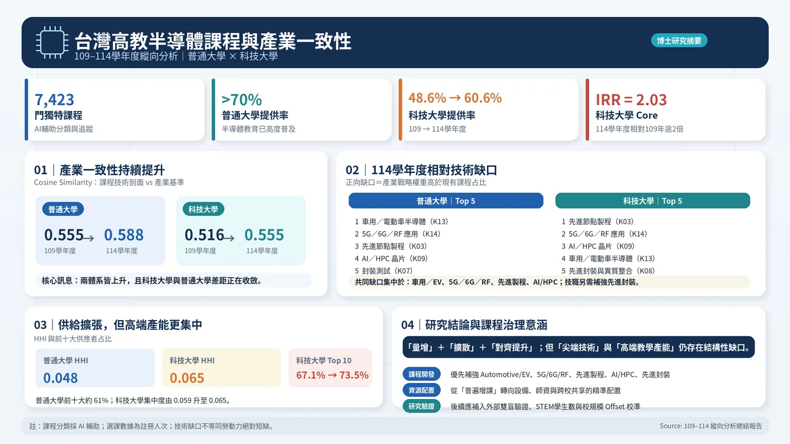

這個網站把 STEP 0–12 的資料清理、分類、描述統計、PPML 固定效果、穩健性檢驗與產業技術對應，轉成不需要統計背景也能讀懂的說明。
下面四個數字是正式 Results 的核心，不是宣傳口號。
最容易犯的錯，是把行政列示直接當成課程數。這個研究先把 cross-listing、重複列示、學校狀態與零課程年份處理掉，再進入模型。
資料稽核 → Listing / Offering / Linkage 三層重建 → active-school universe → 零值補齊。
Codebook v1.1 → Pilot120 → AI-assisted 分類 → QC / sensitivity → 801 筆 panel。
集中度與擴散 → PPML FE → robustness → 17 技術維度 alignment / gap。
正式表圖、結果章節、理論貢獻、政策意涵與限制。

p 值不顯著的正確說法是「目前沒有足夠證據支持兩類大學的成長軌跡不同」，不是證明兩者完全相同。
STEP 10 的 gap 是文件型 benchmark 與課程組成的相對差，不是企業缺工、職缺數或應開幾門課。
課程供給增加不等於學生能力、就業率或薪資一定增加；本研究沒有直接量測這些結果。